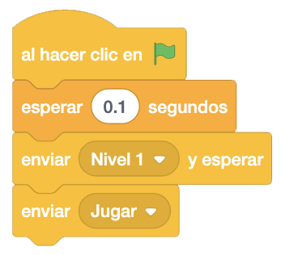
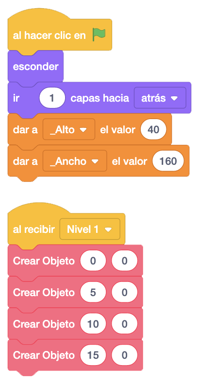
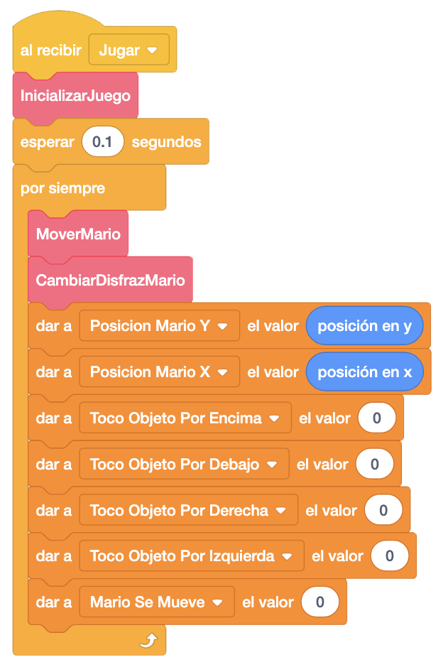
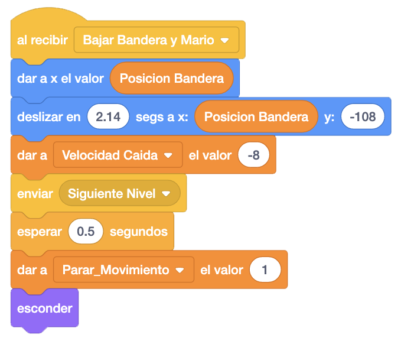
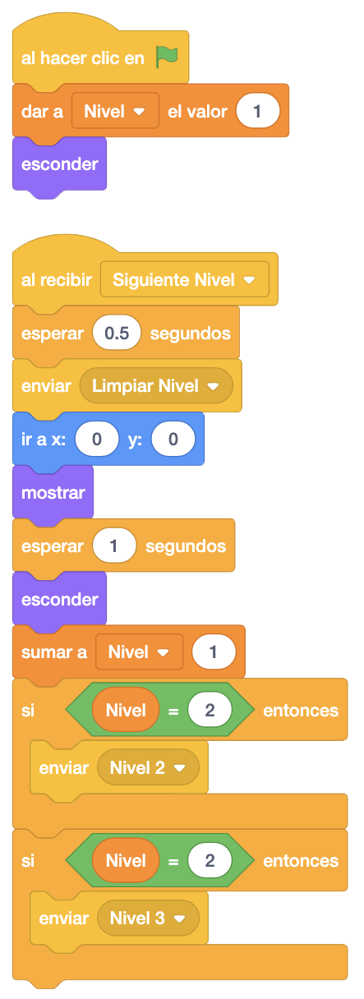
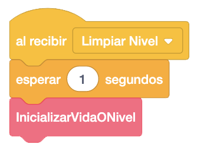
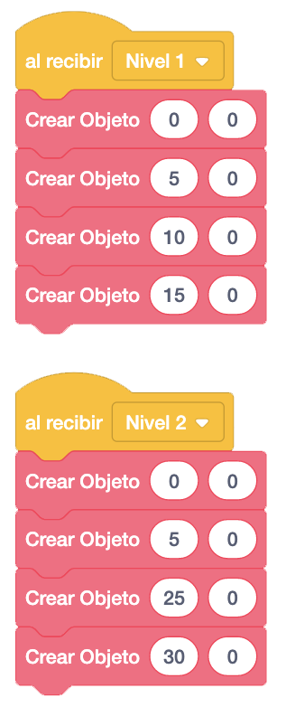

Vamos a ponernos con los niveles. Para ello, lo primero que haremos será programar el escenario. En él pondremos que "Al Hacer Clic En La Bandera" envíe el mensaje "Nivel 1" para que pinte el primer nivel y "Jugar" para empezar a jugar con Mario.

Ahora, en los bloques "Al Hacer Clic En La Bandera" de todos los objetos de los que hacemos clones, vamos a separar en un mensaje las llamadas a la creación de objetos, metiéndolas en el mensaje "Nivel 1" para que al llamarlo, pinte el primer nivel.

En el Mario, lo que haremos será cambiar el bloque "Al Hacer Clic En La Bandera" por recibir el mensaje "Jugar".

Y en el mensaje "Bajar Bandera y Mario" añadimos enviar el mensaje "Siguiente Nivel", para hacer todo lo necesario para pasar al nivel siguiente, esperamos un poco y bloqueamos los movimientos de Mario.

Este nuevo mensaje "Siguiente Nivel" lo programaremos en el objeto "Siguiente Nivel". Antes, crearemos la
variable "Nivel" que nos indicará el nivel por el que vamos e inicializaremos a "1" en el objeto
"Inicializar Juego" de Mario.
Al empezar el juego esconderemos el objeto y lo colocamos en el centro.
El resto de la programación irá en el Mensaje "Siguiente Nivel", donde enviaremos el mensaje "Limpiar Nivel"
para eliminar los clones o esconder los objetos del anterior nivel, que luego programaremos.
Lo colocamos en el centro y mostraremos el objeto con el mensaje durante 1 segundo, sumamos "1" al nivel y
dependiendo del nivel en el que estemos, llamaremos a su mensaje correspondiente.

Vamos a programar ahora el mensaje "Limpiar Nivel". Lo haremos en cada objeto (excepto en los números de la
parte de arriba) y dependiendo de si creamos clones o no, eliminamos los clones o lo escondemos.
En Mario, lo que haremos será esperar 1 segundo y llamar al bloque "InicializarVidaONivel" para resetear el
nuevo nivel.

Finalmente crearemos el mensaje "Nivel 2" y el resto de niveles que queramos hacer, en cada uno de los objetos del juego, colocándolos para formar un nuevo nivel. En nuestro caso vamos a programar 2 niveles.

El juego iría quedando así.
Podemos ver el juego terminado con los niveles pulsando aquí.